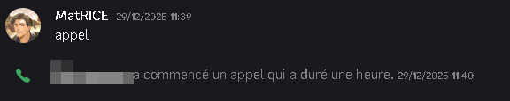
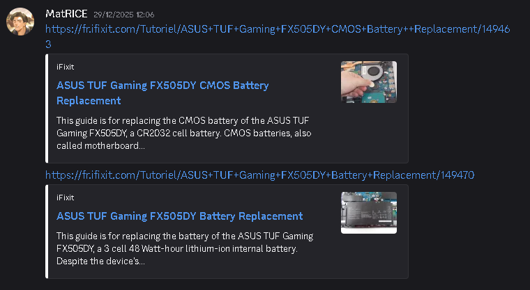

Présentation du projet
Pendant mon année de BTS et mon stage, j'ai pu rentrer en contact avec plusieurs des membres de l'équipe de développement de Sukai SAS mais aussi une connaissance proche qui faisait parti de l'équipe dédiée à l'élaboration des cours de leur application en cours de développement. De ce fait une certaine proximité retranscrit dans les échanges pedant la maintenance peut être observé.
Le cas abordé pendant cette maintenance est celui d'un PC qui s'allume mais ne démarre pas, ce qui peut être causé par divers problèmes matériels ou logiciels. L'objectif de ce projet est de diagnostiquer et de résoudre ce problème afin de restaurer le bon fonctionnement du PC.
Le projet se déroulera en plusieurs étapes, notamment l'identification du problème, la recherche de solutions potentielles, la mise en œuvre de la solution choisie et la vérification du bon fonctionnement du PC après la réparation.
Réparation de panne PC : le pc s'allume mais ne démarre pas
Demande d'assistance
L'ordinateur s'allume mais ne démarre pas
Description : L'utilisateur signale que le PC s'allume mais ne démarre pas. Les lumières du clavier sont présentes mais l'écran reste noir et le ventilateur ne tourne pas.
Étape 1 : Prise de contact avec l'utilisateur
L'utilisateur m'a contacté pour signaler que son PC s'allume mais ne démarre pas. J'ai recueilli des informations sur le problème, notamment les symptômes observés et les circonstances entourant la panne.

Étape 2 : Première hypothèse
Après avoir recueilli les informations, j'ai formulé une première hypothèse sur la cause du problème : il pourrait s'agir d'un problème de démarrage lié à un composant matériel défaillant. Ma première idée était que la pile de BIOS devait être plutôt agée car le PC n'avait jamais été ouvert même pour un dépoussiérage, ce qui pouvait causer des problèmes de démarrage. J'ai donc conseillé à l'utilisateur d'acheter une pile 3V CR2032 d'après le modèle de son PC et se trouvant au Japon, je lui ai conseillé une superette de quartier qui vendait ce type de pile pour qu'il puisse la récupérer rapidement et ainsi tester si le problème venait de là.

Étape 3 : Guidage pour le démontage de la pile
Après avoir reçu une photo de l'ordinateur ouvert et de la pile, j'ai guidé l'utilisateur à travers les étapes pour remplacer la pile du BIOS.
Je lui ai expliqué comment retirer l'ancienne pile et installer la nouvelle, en lui fournissant des instructions claires et des conseils de sécurité.

Dernière étape : Pour tester, aider avec les consignes de sécurité ( en l'occurence, ne pas toucher les composants avec des objets en métal et avant tout débrancher la batterie de l'ordinateur avec une quelconque manipulation ) , j'ai demandé à l'utilisateur de m'appeler pour que je puisse l'assister en temps réel ( en France donc 11:39 et au Japon 19:39 ) et ainsi vérifier que le problème venait bien de la pile du BIOS. Après le remplacement de la pile, l'utilisateur a pu redémarrer son PC sans problème, confirmant que la panne était due à une pile de BIOS défaillante.

Pour aider au démontage des composants nécessaires, j'ai fourni des instructions détaillées pendant l'appel ains que des tutoriels du site Ifixit avec le modèle de son ordinateur.

Grâce à ces instructions, l'utilisateur a pu remplacer la pile du BIOS avec succès et redémarrer son PC sans problème, confirmant que la panne était due à une pile de BIOS défaillante. L'appel s'est donc révélé efficace et s'est terminé peu après.
Étape 4 : Suivi de réparation avec l'utilisateur
Le lendemain suivant la réparation, j'ai contacté l'utilisateur brièvement pour m'assurer que le PC fonctionnait toujours correctement et au cas où procéder à des vérifications supplémentaires. Mais il m'a confirmé que tout fonctionnait parfaitement et que le problème avait été résolu.